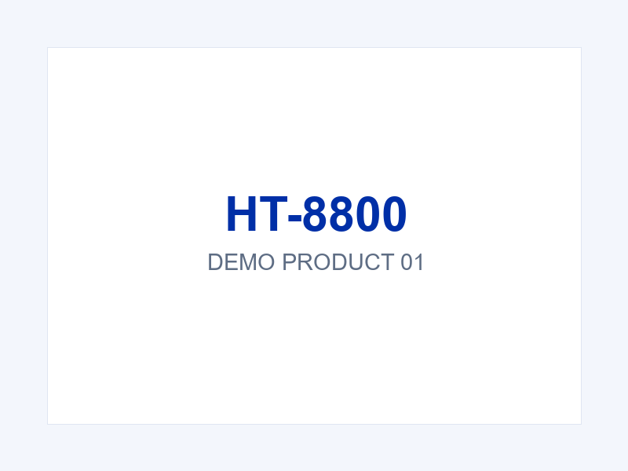

← All products

Handheld Series
Industrial Handheld Terminal
Model: HT-8800
5-inch industrial handheld terminal with barcode scanning and IP67 protection.
Key features
- Octa-core processor, 4 GB RAM + 64 GB storage
- Industrial protection rating, dust and water resistant
- Optional barcode scanning, RFID and fingerprint modules
Typical applications
Warehousing, logistics, manufacturing and field service.
- Octa-core processor, 4 GB RAM + 64 GB storage
- Industrial protection rating, dust and water resistant
- Optional barcode scanning, RFID and fingerprint modules
Typical applications
Warehousing, logistics, manufacturing and field service.